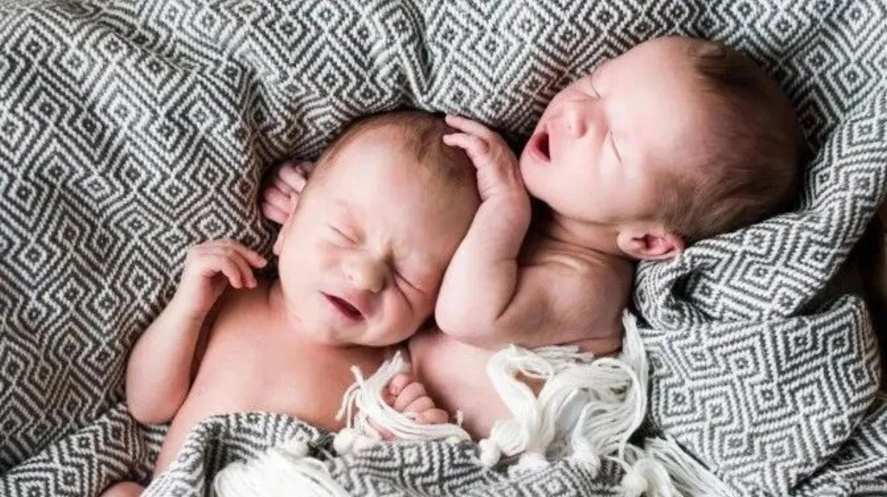
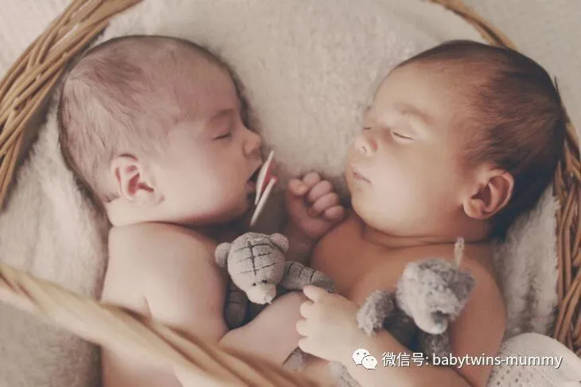
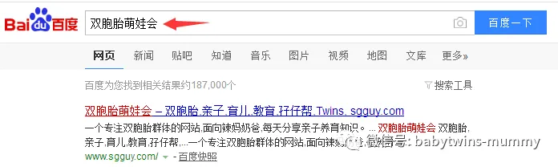

点击上方“孖仔帮”关注我们
孖仔帮
汇集全国各地及海外的双胎妈妈的交流园地
专门针对双胎孕期，喂养，教育等方面的经验分享
孖仔帮期待您的加入！
让我们一起成长，快乐育儿！
文|圆圈妈
01
身为双胞胎妈妈，双胞胎意味着双倍的麻烦和双倍的乐趣，这话你一定听说过无数遍了吧。但是当你好不容易哄完这个睡着，正准备躺下时，另外一个却尿湿或者肚子饿又哭醒了。
01
这个时候，恐怕拿刀架在你脖子上，你也不想违心地说 “双胞胎乐趣无穷啊！”养育双胞胎的世纪难题之一---双胞胎的睡眠问题，如果这个问题能够得到有效解决，双倍的乐趣还是存在的！
主题
今天的主题是双胞胎的睡眠问题。
参考文献：https://www.babycenter.com/0_helping-twins-sleep-at-the-same-time_7650.bc
比较理论化，但还是挺受用的。因为翻译能力有限，有些有点晦涩的地方，我穿插了自己的理解和个人看法。有兴趣的宝妈可以参考下英文原版。
让双胞胎宝宝同时入睡
让双胞胎宝宝保持同样的睡眠时间是营造一个健康睡眠模式的关键，对孩子对大人都有极大的好处。
如果他们的睡觉时间不是同时进行，那么有可能他们中的一个或者两个可能在任何时候就会醒来，然后你就等着哄完这个搞那个，好不容易搞定两个，不好意思，天亮了！
建立一个规律的睡前模式
如果你真的下定决心要解决他们的睡眠问题，那就给双胞胎宝宝一个宽松的时间，一个星期或者半个月，用这个规定时间给宝宝们建立一个规律的睡前模式。我们大人的生活需要仪式感，双胞胎宝宝的睡觉也需要一点仪式感的哦！可以在睡前给他们喝点牛奶，如果不担心龋齿的话。如果宝宝尚在小月龄，可以给他们做下抚触。稍大一点的双胞胎，如一岁以上，家长可以给他们读点绘本，讲些简单的故事。
不管我们为这个睡前仪式做了什么，只要宝宝们接受都可以去尝试，但有一点必须保证的是，你必须坚持且每天都一样的做法，以至于形成一个习惯，让宝宝们知道是时候睡觉了。
帮助宝宝学会自己入睡
如果你希望宝宝们8点钟之前要睡觉，那你准备好一切之后，在7点半左右就把他们放在一个容易让他们昏昏欲睡的环境下。比如灯光调暗点，弄点吸尘器或者抽油烟机的小噪音，把他们放在摇摇椅或者柔软舒适的垫子上，给他们听听轻柔的音乐。
总之，结合宝宝们的个体差异，想尽一切办法，让他们跟着你的节奏走，目的只有一个，让他们昏昏欲睡，从何学会自己入睡。
有些宝宝明明抱在怀里睡着了，刚放下就醒了，如果你的宝宝们是这种情况，那你更加应该帮助他们学会自己入睡。刚开始，肯定会失败甚至压根无法进行下去，但宝宝的可塑性是很强的，反而是家长有时候玻璃心导致主观上把困难扩大化，以至失败告终。
先安抚安静的那个宝宝
如果两个双胞胎宝宝正在睡觉，突然有一个哭醒了，几乎所有的家长都会奔向那个哭泣的宝宝，试图阻止他的哭泣，免得吵醒了另外一个正在睡觉的宝宝。
大多数的双胞胎宝宝几乎不会受到彼此的影响，即使在同一个房间。他们在妈妈的肚子里呆了那么久时间早就习惯了彼此，区区点哭声简直是小菜一碟。而为什么有些家长却反馈，确确实实是哭醒的那个把另一个也吵醒了。
可能是还在安静睡觉的幼儿闻到妈妈的气息，感知到家长的到来，可是却不是为了自己而来，就着急地醒来了。此时如果家长第一时间去安抚的人正是那个安静睡觉的宝宝，那这个心满意是的宝宝就会继续入睡。
而对于哭泣的宝宝，你安顿好那个安静的宝宝之后，可以抱起安抚下。
狠心点，让他们重新入睡
不管是单胎宝宝还是双胎宝宝，夜间醒来是常事，如果是小月龄宝宝，那可以理解。但如果6个月以上的宝宝依然夜间醒来且无规律，家长就需要好好训练下这两个顽皮的小屁孩咯。
当他们夜间醒来了，除非是生病不适等特殊情况，一般不鼓励家长有任何“积极的反应”，如开灯，抱起来喝奶或喝水都不可取。
如在确保无任何特殊情况下，家长应狠心点，偷懒下，对夜间醒来并哭泣的宝宝，冷处理。先静观其变，再根据情况给点安抚物，如毛绒玩具或毯子，这些“过渡性物体”的介入会让夜醒的宝宝感到欣慰，从而配合家长重新入睡。
如果可以，那就分开两个房间吧
有没有发现一个问题，单胎宝宝一般没有玩伴很快就能在家长的精心策划下早早睡觉，但是双胎宝宝，当他们一岁之后，彼此间的互动更多了，尤其是晚上睡前，似乎无论家长使出什么方法，依旧对他们无济于事。他们好像一个不停摆的闹钟，在床上蹦蹦跳跳上蹿下窜，再加上有伴儿一起会玩得更嗨。比如来个睡前的决斗，白天未完成的游戏，或者叽里呱啦说一些只有他们两个才懂的“花香鸟语”。
如果家长实在束手无策了，那就分开两个房间睡，到点睡觉了就让他们回到各自的床上睡觉。
圆圈妈有话说：
发现国外的育儿经验非常说到人的心坎里，这也是为什么圆圈兄弟的奶粉，尿不湿等日用品几乎都用进口，甚至育儿书籍方面，我也更偏向于看国外的著作。
有些是现成的中文译文版，有些是英文原版。
但有一点值得一提，不管是国内还是国外的育儿经验，不管是正规科普还是铺天盖地的伪原创，我们做家长的都应遵循一个原则是：适合孩子的才是最好的！
比如，以上提到的6点双胞胎宝宝的睡眠问题，你说管不管用呢？我觉得对我不受用，尤其是先让我安抚安静的那个孩子，我反正第一反应就是马上把哭的那个抱走，越远越好。
但也许用在其他家庭和孩子身上就非常管用。
因此，育儿，真的无定论。
在我看来，带娃这件事上，各种育儿理论和别人的建议只能当做参考，毕竟你最清楚，对孩子和你以及你的家庭来说，什么方式是最好的。而且，你应该相信，不管你对双胞胎宝宝的睡觉的主张是什么，你都能找到支持你的专家和理论。所以，这真无谓好坏，只是一个选择而已。
随着双胞胎宝宝的长大，他们的睡眠模式会越来越趋向于成人，且会呈现个性化的模式发展。
你可能会发现每个孩子的睡眠需求都会略有不同，即便他们是一模一样的双胞胎宝宝。
在养育圆圈的过程中，我作为一个双胞胎宝妈，还有几个小贴士补充给家长参考下。
鼓励他们有自己的安抚物，如毛绒绒的被子
即便他们实在顽皮得让你招架不住，你很想很解恨地把他们敲晕，但想想就行了哈。
尽量不要在睡觉前威胁他们，比如“不好好睡觉就扔出去被大灰狼吃掉”这种话，不仅于事无补，还会让情况愈演愈烈，让孩子们因此陷入紧张恐惧的状态，更加难以入睡。
值得一提，从一开始就要给他们树立一个观念，卧室就是个睡觉的地方，进入卧室意味着要睡觉了。因此，有些喜欢“关小黑屋”这一招的家长，可以把他们送到任意一个房间惩罚他们，除了卧室。不然卧室对于他们来说就是个“小黑屋”。请问，孩子们在觉得不安全的环境下能放心入睡吗？
不要看过于刺激的睡前故事。可选一些简单轻松的话题，看一些画面温暖的插图。
圆圈妈：资深屌丝女+腐女一枚，家有孖仔男两枚。
微信公众号ID：babytwins-mummy 孖仔帮
个人博客：双胞胎萌娃会（www.sgguy.com）
一个专注双胞胎群体的网站，每天分享亲子养育经验
目前孖仔帮建立了微信群
孖仔帮双胞胎孕期群&孖仔帮双胞胎养育群
家长们可以根据需要进入任意一个群
想要进入孖仔帮的微信群
可以加圆圈妈的微信。
由圆圈妈邀请入群
欢迎加入双胞胎大家庭
让我们一起学习成长，快乐育儿！
公众号：孖仔帮
ID:babytwins-mummy
个人博客: www.sgguy.com
一个专注双胞胎群体的育儿网站
点击下方“阅读原文”，可直接进入博客网站




